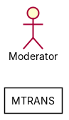
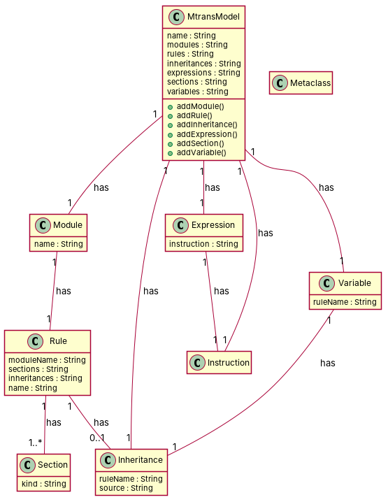

R1: A class named MetaClass. R2: A MTRANS model contains metamodels R3: A MTRANS model has modules. Each module has a name R4: A MTRANS model has rules. Each rule has two properties: one to state whether the rule is abstract and the other one to store its name R5: A MTRANS model has inheritances R6: A MTRANS model has expressions. Each expression has an operator R7: A MTRANS model has Sections. Each section has a kind R8: A MTRANS model has instructions R9: A MTRANS model has variables. Each variable has a name R10: A MTRANS model contains modules. Each module may have metamodels associated R11: A MTRANS model has modules. Each module is composed by a set of one or more rules R12: A MTRANS model has rules. Each rule has a module associated to it R13: A MTRANS model has modules. Each rule has a source which is a metaclass R14: A MTRANS model has rules. Each rule is composed by at least one section R15: A MTRANS model has rules. Each rule might be composed by inheritances R16: A MTRANS model has inheritances. Each inheritance has a rule associated R17: A MTRANS model has inheritance objects. Each of which may have inherited rules R18: An expression can be composed of one and only inherited rule R19: There are two classes. The first one is named Expression and the second is named Instruction. The class Expression has an attribute named instruction of type Instruction and of cardinality 1. The class Instruction has no attribute. R20: A rule can have more than one section. A section can be in one and only rule. R21: An instruction is composed of one and only expression. An expression must be associated with one and only instruction. R22: A variable is associated with one and only rule. A rule is composed of multiple variables.
Red, struck-through: removed by ambiguity removal; green: added.
| actors (1 → 1) |
|---|
| operator |
| classes (11 → 9) |
|---|
| Expression |
| InOne |
| Inheritance |
| Instruction |
| Metamodel |
| Module |
| MtransModel |
| OnlyRule |
| Rule |
| Section |
| Variable |
| attributes (8 → 8) |
|---|
| Expression.operator |
| Module.name |
| MtransModel.inheritance object |
| MtransModel.sections |
| Rule.name |
| Rule.property |
| Rule.source |
| Variable.name |
| Inheritance.name |
| Inheritance.property |
| Inheritance.source |
| relations (14 → 10) |
|---|
| association: Expression -> Instruction |
| association: Variable -> Rule |
| generalization: InOne -> Section |
| generalization: OnlyRule -> Section |
| has: Inheritance -> Rule |
| has: MtransModel -> Expression |
| has: MtransModel -> Inheritance |
| has: MtransModel -> Instruction |
| has: MtransModel -> Metamodel |
| has: MtransModel -> Module |
| has: MtransModel -> Rule |
| has: MtransModel -> Variable |
| has: Rule -> Module |
| has: Rule -> Section |
| association: Variable -> Inheritance |
| has: Inheritance -> Module |
| id | req | type | cue | status | readings / explanation |
|---|---|---|---|---|---|
| A1 | R4 | referential | its | resolved | its properties; the rule's properties The sentence is ambiguous as to whether 'its' refers to the rule or the module. |
| A2 | R11 | quantifier | one or more | resolved | one rule per module; multiple rules per module The phrase 'one or more' is ambiguous and could imply either one rule per module or multiple rules per module. |
| A3 | R12 | referential | it | resolved | each rule has a module; each module has a rule The sentence is ambiguous as to whether a rule is associated with a module or a module is associated with a rule. |
| A4 | R22 | quantifier | multiple | resolved | a rule is composed of one variable; a rule is composed of multiple variables The phrase 'multiple' is ambiguous and could imply either one variable or multiple variables. |


"""Code skeleton generated from the shared model of D2/MTRANS.
Every class and method records the requirement(s) it traces to."""
from __future__ import annotations
import dataclasses as _dc
import enum as _enum
import typing as _t
@_dc.dataclass
class MtransModel:
"""Source: R2, R3, R4, R5, R6, R7, R8, R9, R10, R11, R12, R13, R14, R15, R16, R17"""
name: _t.Optional[str] = None
modules: _t.Optional[str] = None
rules: _t.Optional[str] = None
inheritances: _t.Optional[str] = None
expressions: _t.Optional[str] = None
sections: _t.Optional[str] = None
variables: _t.Optional[str] = None
expression: _t.Optional["Expression"] = None
inheritance: _t.Optional["Inheritance"] = None
instruction: _t.Optional["Instruction"] = None
module: _t.Optional["Module"] = None
variable: _t.Optional["Variable"] = None
def addModule(self) -> None:
"""Operation."""
raise NotImplementedError
def addRule(self) -> None:
"""Operation."""
raise NotImplementedError
def addInheritance(self) -> None:
"""Operation."""
raise NotImplementedError
def addExpression(self) -> None:
"""Operation."""
raise NotImplementedError
def addSection(self) -> None:
"""Operation."""
raise NotImplementedError
def addVariable(self) -> None:
"""Operation."""
raise NotImplementedError
@_dc.dataclass
class Module:
"""Source: R3, R10, R11, R12, R13"""
name: _t.Optional[str] = None
rule: _t.Optional["Rule"] = None
@_dc.dataclass
class Rule:
"""Source: R4, R12, R13, R14, R15"""
moduleName: _t.Optional[str] = None
sections: _t.Optional[str] = None
inheritances: _t.Optional[str] = None
name: _t.Optional[str] = None
inheritance: _t.Optional["Inheritance"] = None
@_dc.dataclass
class Inheritance:
"""Source: R5, R16, R17"""
ruleName: _t.Optional[str] = None
source: _t.Optional[str] = None
@_dc.dataclass
class Expression:
"""Source: R6, R18, R19"""
instruction: _t.Optional[str] = None
@_dc.dataclass
class Instruction:
"""Source: R19"""
pass
@_dc.dataclass
class Section:
"""Source: R7, R20"""
kind: _t.Optional[str] = None
@_dc.dataclass
class Variable:
"""Source: R9, R22"""
ruleName: _t.Optional[str] = None
inheritance: _t.Optional["Inheritance"] = None
@_dc.dataclass
class Metaclass:
"""Source: R13"""
pass
| python_compiles | True |
|---|---|
| java_compiles | True |
| attribute_mismatches | 0 |
| method_mismatches | 0 |
| use_cases | 0 |
| use_cases_without_actor | 0 |
| use_cases_without_method | 0 |
| actors_without_use_case | 1 |
| relations_to_unknown_class | 0 |
| inconsistencies | 1 |
| inconsistency_rate | 0.1 |
| requirement_coverage | 0.9091 |
| validator fixes | |
| assumptions for open ambiguities | [{"tag": "A3", "assumption": "Each module may have metamodels associated"}] |
| element | P | R | F1 | TP/FP/FN |
|---|---|---|---|---|
| classes | 0.778 | 0.778 | 0.778 | 7/2/2 |
| attributes | 0.176 | 0.375 | 0.24 | 3/14/5 |
| relations | 0.4 | 0.4 | 0.4 | 4/6/6 |
| relations_strict | 0.4 | 0.4 | 0.4 | 4/6/6 |